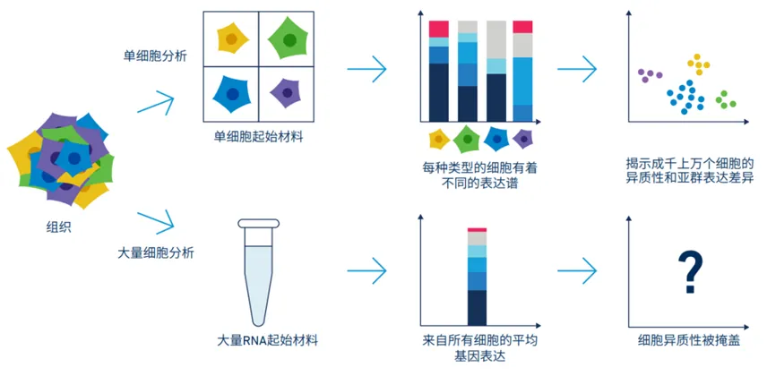
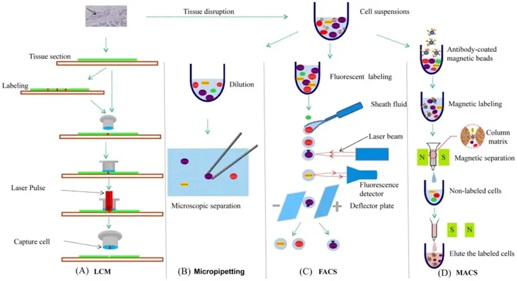
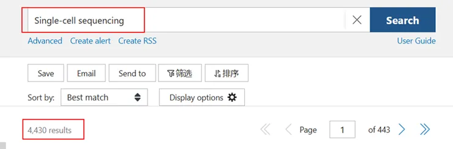

国自然中的单细胞测序
原文：https://mp.weixin.qq.com/s?__biz=MzAwMzIzOTk5OQ==&mid=2247520196&idx=1&sn=01a5fc52ae42183af162822fbdfaf374&chksm=9b3cf694ac4b7f82e6ea8c6a4639ec1bdcab1339f5259832576b1dd87208888a92eaf9c7437b#rd 合集：基金申报
一、【背景介绍】单细胞测序是什么？
·单细胞测序技术是一种强大的工具，可以从单个细胞的角度详细分析基因表达情况，从而深入理解细胞在特定生理状态下的功能和行为。传统的测序技术通常需要成千上万个细胞的混合样本，这无法揭示细胞间的微妙差异或特定细胞类型的独特基因表达模式。单细胞测序通过对每一个单独细胞的基因表达进行分析，能够提供更精确、细致的生物信息，这对于理解复杂的生物过程和疾病机理尤为重要。

·单细胞测序的应用广泛，不仅限于基础生物学研究。在医学领域，它有助于识别癌症中的异质细胞群体，理解肿瘤的进化以及响应治疗的机制。在发育生物学中，单细胞测序可以追踪细胞命运决定和发育过程。此外，它也在免疫学和神经科学中有重要应用，比如分析免疫细胞对病原体的响应或脑中不同神经细胞类型的功能。
更多国自然申请技巧，可联系青椒哥：
二、【研究手段与方法】单细胞测序怎么做？
单细胞测序的基本步骤通常包括以下几个环节：
**1.**单细胞分离 ：单细胞测序的第一步是从组织样本中分离出单个细胞。这可以通过流式细胞排序（FACS）、激光捕获显微切割（LCM）、微流控技术等方法实现。这些技术可以精确地分离并选定目标细胞，以便进行后续的遗传材料提取。

单细胞分离常用方法
**2. **核酸提取和扩增 ：细胞一旦被分离，其内部的RNA或DNA就需要被提取出来。对于单细胞转录组测序，主要是提取mRNA，并通过逆转录酶将其转化为cDNA。由于单个细胞中的核酸量非常少，这些cDNA通常需要通过PCR或其它扩增技术进行扩增，以便有足够的样本量进行测序。
**3.**测序： 扩增后的cDNA或DNA被送至下一代测序平台进行高通量测序。这些平台能够生成数以亿计的短序列读取，这些读取随后被用于重建出单个细胞的基因表达档案或基因组序列。
**4.**数据分析 ：通过生物信息学工具对测序数据进行分析，包括基因表达量的定量、变异检测、细胞聚类等。
三、【研究现状】单细胞测序发文如何？
·单细胞测序领域的研究发文量在过去十年中显著增加，仅2024年（截止7月初）就发表了高达4430篇文章，涉及癌症、神经生物学、发育生物学和免疫学等领域。

·发表的期刊包括《Nature Biotechnology》（IF：33.1）、《Nature Reviews Genetics》（IF：39.1）、《Cancer Cell》（IF：48.8）等，甚至顶级科学期刊如《Nature》亦有发表。
·单细胞测序领域的快速发展和广泛应用表明了这一技术在揭示生物复杂性和促进疾病机理理解方面的巨大潜力。随着更多高影响力期刊的关注和支持，预计未来这一领域将继续扩展其科研边界，特别是在精准医疗和生物医学研究中发挥更加关键的作用。
四、【国自然中标统计】单细胞测序热度如何？
·2023年国自然涉及单细胞测序的中标项目达54个，其热度正逐渐攀升。
部分中标项目
·鉴于单细胞测序技术的多样性和广泛应用前景，以下几个研究方向可能是未来申请国家自然科学基金时的热点：
1. 疾病机制与靶点研究： 通过单细胞测序探索各类疾病（如癌症、自身免疫疾病、遗传病等）的发病机制和潜在的治疗靶点。例如，研究癌症细胞异质性、肿瘤微环境的细胞组成及其对癌症进程的影响。
2. 发育生物学与组织重建： 应用单细胞测序技术研究细胞命运决定、组织发育和重建过程中的细胞间交互。这包括研究细胞如何在发育过程中转化成不同的细胞类型以及这些过程的调控机制。
3. 精准医疗与细胞治疗： 结合单细胞测序与其他组学技术，如表观遗传学、代谢组学，开发新的诊断工具和治疗策略，特别是在精准医疗和细胞治疗领域。例如，探索特定疾病的细胞标志物或预测疗效的生物标志物。****
4. 系统生物学与网络分析： 利用单细胞测序数据进行大规模的生物信息分析，构建细胞类型和状态的综合网络模型，深入理解生物系统的复杂性。研究如何网络变化与疾病、老化等生物过程相关联。
5. 技术创新与方法学发展： 开发新的单细胞测序技术、分析方法或提升现有技术的敏感度和精确度。例如，发展用于不同生物样本的单细胞分离、捕获和分析技术。
单细胞测序技术的快速发展不仅革新了我们对生物复杂性的理解，而且在诸如精准医疗、疾病机理研究与治疗靶点开发等领域展现了巨大潜力。随着更多创新方法的出现及对细胞间差异的深入探索，未来这项技术将进一步推动生物医学的研究，为我们提供更精确的疾病诊断与治疗策略，尤其在理解疾病的异质性和个体化治疗方案的设计中，其影响力不容小觑。
更多国自然申请技巧，可联系青椒哥：